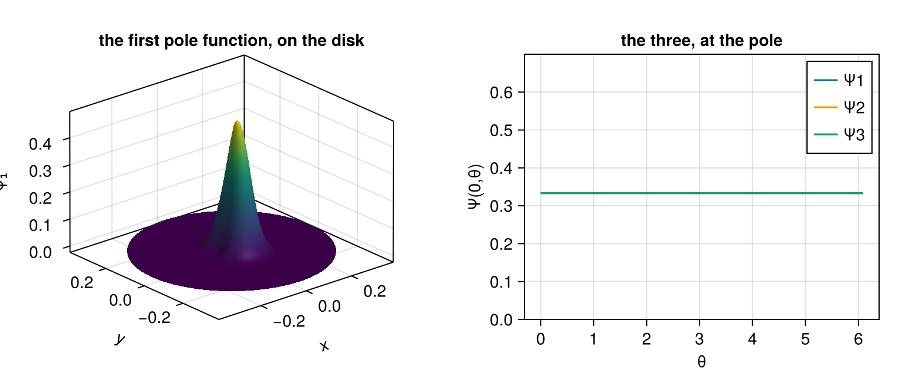

Polar Splines
A disk is not a box, and the natural way to mesh one — the parameter square $(s,\theta) \in [0,1] \times [0,2\pi)$, periodic in $\theta$ — is not a tensor product of two spline spaces. The obstruction is geometric rather than numerical, and no refinement removes it.
using SimpleSplines
using CairoMakie
using LinearAlgebraThe pole collapses a circle to a point
The map that carries the parameter square onto the disk sends the whole circle $s = 0$ to one point. A function on the square is therefore single-valued at that point only if its $\theta$-dependence there is constant — and a tensor-product basis imposes no such constraint. A spline in it takes an $O(1)$ range of values over a set the geometry has collapsed to a single place, so the discrete function is not even $C^0$ on the disk:
radial = BSplineBasis(UniformMesh(12, 0 .. 1), 3)
angular = PeriodicBSplineBasis(UniformMesh(24, 0 .. 2π), 3)
angles = range(0, 2π; length = 33)[1:32]
P = radial ⊗ angular
û = randn(size(P)...)
vals = [evaluate(P, û, (0.0, θ)) for θ in angles]
extrema(vals)(-2.03567627766472, 2.2920961544451606)This is a stronger obstruction than the loss of $C^1$ one might expect from a polar coordinate singularity, and it cannot be met by an $\varepsilon$ floor on $s$, a puncture at the origin or a modified basis near the pole. Each of those produces a discretisation whose answers are about the regularisation.
The polar space
PolarSplineBasis replaces the first two rows of the radial basis — $2 N_\theta$ tensor-product functions — by three. That the number is three, and not two or four, is the count of the bivariate polynomials of total degree at most one: a constant and two linear functions. Those are exactly what a $C^1$ function has at a point.
B = PolarSplineBasis(radial, angular)
nbasis(B), nbasis(parent(B)), nbasis(parent(B)) - nbasis(B)(315, 360, 45)Write a tensor-product spline as $u = \sum_{ij} \hat{u}_{ij} N_i(s) M_j(\theta)$. A clamped radial basis of degree $p \ge 2$ has $N_1(a) = 1$, $N_i(a) = 0$ for $i > 1$, and a nonzero derivative at $a$ only for $N_1$ and $N_2$, with $N_1'(a) = -N_2'(a)$. So the value and the radial derivative at the pole read
\[u(a,\theta) = \sum_j \hat{u}_{1j} M_j(\theta) , \qquad \partial_s u(a,\theta) = N_2'(a) \sum_j (\hat{u}_{2j} - \hat{u}_{1j}) \, M_j(\theta) ,\]
and no other coefficient of the basis can affect either. Imposing
\[\hat{u}_{1j} = c , \qquad \hat{u}_{2j} = c + \frac{\alpha \cos\theta_j + \beta \sin\theta_j}{N_2'(a)}\]
with $\theta_j$ the Greville abscissae of the angular basis makes the value a constant and the radial derivative
\[\partial_s u(a,\theta) = \alpha \, C(\theta) + \beta \, S(\theta) , \qquad C = \sum_j \cos\theta_j \, M_j , \quad S = \sum_j \sin\theta_j \, M_j .\]
The constrained set is three-dimensional, parametrised by $(c,\alpha,\beta)$.
The chart the smoothness is measured in
$C$ and $S$ are splines, not the trigonometric functions: $\cos\theta$ is not in the angular spline space, and no choice of coefficients puts it there. The chart in which the space is $C^1$ is therefore built from them,
\[\tilde{x} = (s-a) \, C(\theta) , \qquad \tilde{y} = (s-a) \, S(\theta) ,\]
which is what pseudo_cartesian returns. In it the radial derivative above is exactly the linear function $\alpha \tilde{x} + \beta \tilde{y}$, so the $C^1$ property is exact rather than approximate — and the space contains $1$, $\tilde{x}$ and $\tilde{y}$ to round-off:
Ns, Nθ = nbasis(radial), nbasis(angular)
θnodes, greville, V = nodes(angular), nodes(radial), pole_triangle(B)
function chart(α, β)
û = zeros(nbasis(B))
for k in 1:3
û[k] = α * V[k, 1] + β * V[k, 2]
end
for i in 3:Ns, j in 1:Nθ
û[3 + (i - 2) + (j - 1) * (Ns - 2)] =
greville[i] * (α * cos(θnodes[j]) + β * sin(θnodes[j]))
end
û
end
pts = [(s, θ) for s in range(0, 1; length = 11), θ in angles]
maximum(x -> abs(evaluate(B, chart(0.0, 1.0), x) - pseudo_cartesian(B, x)[2]), pts)2.220446049250313e-16A geometry map that is itself represented in this space — the isogeometric case — carries the smoothness to the physical domain, because the physical coordinates near the pole are then an invertible linear image of $(\tilde{x}, \tilde{y})$.
The pole triangle
Any basis of the three-dimensional constrained set would do for the span. The one used is the set of barycentric coordinates of an equilateral triangle in the $(\tilde{x},\tilde{y})$ plane, with vertices at radius $2/N_2'(a)$:
pole_triangle(B)3×2 Matrix{Float64}:
0.0555556 0.0
-0.0277778 0.0481125
-0.0277778 -0.0481125The radius is not free. Written out, the coefficients of $\Psi_k$ on the first two rows are $\lambda^{(1)}_{kj} = 1/3$ and $\lambda^{(2)}_{kj} = \tfrac{1}{3}(1 + \cos(\psi_k - \theta_j))$, and that radius is the smallest for which the second is non-negative. The three vertices sum to zero, so $\sum_k \Psi_k$ is the sum the two rows had before, and the whole basis is still a partition of unity:
maximum(x -> abs(sum(evaluate(B, k, x) for k in 1:nbasis(B)) - 1), pts)1.5543122344752192e-15Each $\Psi_k$ therefore takes the value $1/3$ at the pole, and the three of them together place the value and the tangent plane of a surface at the pole on the triangle of their own control points — the geometric statement of the construction [9], which is what [10] builds its elliptic solver on.
ss = range(0, 0.35; length = 90)
θθ = range(0, 2π; length = 181)
xs = [(s * cos(θ)) for s in ss, θ in θθ]
ys = [(s * sin(θ)) for s in ss, θ in θθ]
Z = [evaluate(B, 1, (s, θ)) for s in ss, θ in θθ]
fig = Figure(size = (760, 330))
ax1 = Axis3(fig[1, 1]; xlabel = "x", ylabel = "y", zlabel = "Ψ₁",
title = "the first pole function, on the disk")
surface!(ax1, xs, ys, Z)
ax2 = Axis(fig[1, 2]; xlabel = "θ", ylabel = "Ψ(0,θ)",
title = "the three, at the pole")
for k in 1:3
lines!(ax2, angles, [evaluate(B, k, (0.0, θ)) for θ in angles]; label = "Ψ$(k)")
end
ylims!(ax2, 0, 0.7)
axislegend(ax2; position = :rt)
fig
What the pole costs
Two things the tensor-product layer promises are gone, and both are consequences of a pole function reaching around the whole angular axis:
- The index set is not a product. A spline carries a coefficient vector, not an array, and
evaluate_allreturns the indices of the nonzero block rather than its first index, because the block is not contiguous.parent_coefficientsis the bridge back to the parent's array shape. - There is no
KroneckerMass. The mass matrix is assembled and factorised — a sparse Cholesky, with only a $3 \times 3$ dense block — instead of being $D$ one-dimensional solves. The tabulation $\Phi_d$ is likewise formed once and memoised, rather than held per axis.
What is not lost is the approximation order. The $L^2$ projection of a smooth function of the disk converges at $p+1$, and the error is not concentrated in the pole cells; see scripts/polar_approximation_order.jl, which measures both, and scripts/polar_continuity.jl, which measures $C^0$ and $C^1$ against controls that must fail.